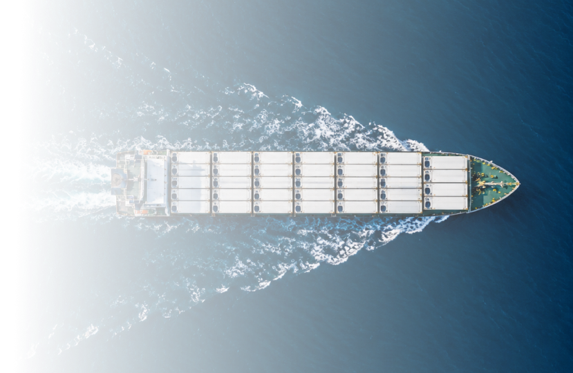
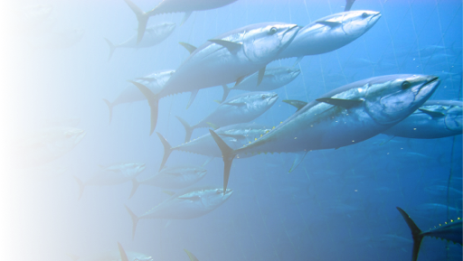

Do mar ao destino, precisão que preserva a qualidade
MONITORAMENTO DE TEMPERATURA EM
Containers Refrigeradosem cargas de atum
Para proteger a qualidade em cada etapa do transporteTEMPERATURA SOB CONTROLE, QUALIDADE PRESERVADA

